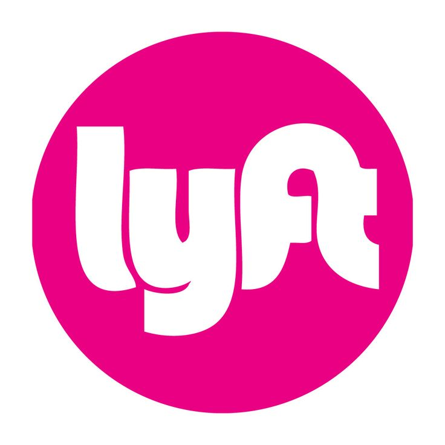

Imagine if the Lyft app would allow you to hide your number from the driver so the driver could only contact you via Lyft messenger using internet. This would ensure safety and privacy of users. Rachel was using Instagram when she came across her friends instagram story about a recent incident where a cab driver tried to contact her after the ride and sent her explicit texts on her personal number. Her friend had linked a Quora article about the same. Rachel checked out the link and was directed to quora where she saw another youtube link. Rachel realised that her privacy was at stake. She then saw her friends comment under the youtube channel and clicked the link which directed her to instagram. Her friend had posted a story informing everyone about the new lyft feature as a precautionary measure. Lyft enabled her to hide her phone number from the driver and allow the driver to only contact her via Lyft messenger.
Click here to see the interaction 